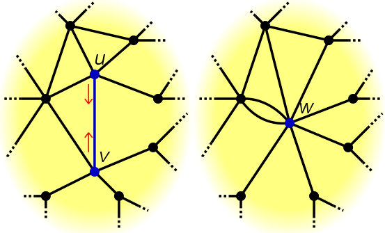
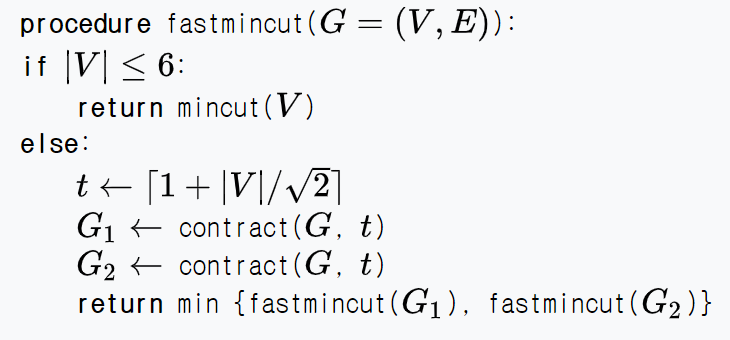

Karger-Stein Minimum Cut
Min Cut
Min Cut 문제란, 어떤 그래프 $G = (V, E)$ 가 주어졌을 때, $V$의 정점들을 두 집합 $S, T$ 로 나누어서, \(\Setcond{(u, v) \in E}{u \in S, v \in T}\) 즉, 한쪽 끝이 $S$에, 다른쪽 끝이 $T$에 들어가는 간선들의 개수를 최소화하는 문제입니다. Weighted graph에서는 간선의 개수가 아니라 weight의 합을 최소화하는 문제로 바꾸어 생각하면 됩니다.
우리는 논의를 위해, 편의상 그래프를 unweighted connected의 경우로만 한정하겠습니다. Directed / Undirected는 (그림은 undirected로 그리더라도) 사실 문제 자체가 똑같습니다. 알고리즘의 측면에서는 조금 차이가 있으므로, 좀더 일반적인 directed graph의 경우를 생각하겠습니다.

예를 들어 이 그림에서 빨간색 cut은 간선 3개짜리 cut이지만, 초록색 cut은 간선 1개짜리입니다.
s-t min cut
Min cut 문제의 variation 중 하나는, s-t min cut 이라는 문제입니다. 이 문제는 $s, t$ 라는 두 정점이 각각 $S, T$에 속해야 한다는 추가 제약조건이 걸린 min cut 문제입니다.
- 매우 유명한 Max-Flow-Min-Cut Theorem에 의하면, s-t min cut 문제는 s-t max flow로 계산할 수 있습니다. 구체적으로, $s$ 에서 $t$로 가는 max flow와 $s-t$ min cut의 크기가 같다는 정리입니다.
- 이 정리의 핵심 아이디어는 두 문제를 각각 LP (Linear Programming) 문제로 바꾼 후, 두 LP를 비교하는 것입니다. 두 LP는 서로 primal-dual 관계에 있음을 알 수 있는데, Dual Linear Program의 Strong duality theorem에 의하면, LP의 경우 strong duality를 갖기 때문에 두 문제의 최적값, 즉 max-flow와 min-cut의 결과값이 같습니다.
- Primal-Dual LP나 Strong duality에 대한 증명은 이 포스팅의 범위를 넘어가는 이야기이기 때문에 생략합니다. 궁금하다면 1 을 참고. Farkas Lemma 등 알아야 할 내용이 상당히 많습니다.
- Dinic의 알고리즘으로 max flow를 $O(V^2 E)$ 에 해결할 수 있고, $E$ 를 $V^2$ 까지 갈 수 있음을 감안하면2 현재 실질적으로 가장 빠른 flow는 $O(V^3)$ 시간에 도는 알고리즘들이 있습니다. (Push-Relabel with FIFO)
이제, 일반적인 min cut을 풀고자 한다고 생각해 봅시다. 당연히, 모든 정점 페어를 $s, t$로 잡고 s-t min cut을 해보는 방법을 생각할 수 있으므로, 우리는 적어도 $O(V^5)$ 알고리즘을 가지고 있습니다. 이보다 나은 방법을 생각해 봅시다. 이하, 시간 복잡도를 쓸 때 정점이 $n$ 개, 간선이 $m$개라고 생각하겠습니다. 즉 $\abs{V} = n, \abs{E} = m$.
Karger’s Algorithm
지금은 MIT의 교수로 계신 Prof. David R Karger가 제시한 Karger’s Algorithm은 Edge contraction이라는 연산에 기반하는, 매우 간단하고 elegant한 알고리즘입니다.
Edge contraction
Edge contraction이란, 말 그대로 edge 양쪽 끝을 접합하는 연산입니다. Edge $e = (u, v)$를 contract한 그래프 $G / e$ 는 다음과 같은 과정을 통해 만들어집니다.
- $(u, v)$ 의 양쪽 vertex $u$ 과 $v$를 합쳐 하나의 vertex $w$를 만듭니다.
- $(u, x)$ 나 $(v, x)$ 가 있으면 이걸 모두 $(w, x)$ 로 만듭니다. 이때, parallel edge는 허용되어야 합니다. 3
- 같은 방법으로 $(x, u), (x, v)$ 에 대해서도 같은 과정을 거칩니다.
- 단, $(u, v)$ 간선은 삭제합니다. self loop은 허용하지 않고, $(w, w)$는 없애 버립니다.
예를 들어 이런 식입니다. 그림을 보면 거의 바로 이해가 갈듯 합니다. 
Algorithm
Karger’s Algorithm은 정말 어이가 없을 정도로 간단합니다.
- Edge Contraction을 계속 진행해서, 노드 두개와 그 노드 두개 사이의 간선 $k$ 개가 남았다고 합시다.
- 재미있는 사실은, 우리의 Edge contraction은 사실 이 두 정점은 같은 집합에 있다 라고 처리하는 것과 동치입니다.
- 따라서, 남은 두개의 정점 $a, b$에 대해 a로 합쳐진 정점의 집합 과 b로 합쳐진 정점의 집합 을 $S, T$로 삼으면, 마지막 순간에 $a, b$를 잇는 $k$개의 간선이 cut edge가 됩니다.
- 그러므로, 정점을 무작정 랜덤하게 줄여나가다가 2개가 남으면 (min cut은 아니겠지만) cut을 하나 얻습니다.
- 우리는, 이걸 충분히 많이 반복하면 min cut을 얻을 확률이 충분히 높음을 논증하고자 합니다. 구체적으로, 이렇게 cut을 하나 얻는 과정까지를 $q$ 번 반복하여, 그동안 얻은 cut들 중 가장 작은 (간선이 적은) cut을 취하는 것을 생각하겠습니다.
Proof
min cut의 크기를 편의상 $K$ 라고 하고, 실제 cut edge의 집합을 $C$라고 하겠습니다. 이제, 위 알고리즘이 C를 반환할, 즉 올바른 답을 제공할 확률은 $K$개의 Edge가 $n-2$번의 contraction을 모두 살아남아야 합니다. 각 contraction에서는 남은 edge들 중 하나를 임의로 contraction해버리므로, 매 스텝을 모두 살아남을 확률은 \(\prod_{i = 0}^{n-3} \left(1 - \frac{K}{E - i}\right)\) 이렇게 계산됩니다. 그런데, $\frac{K}{E - i}$ 는 잘 생각해보면 좋은 바운드를 잡을 수 있습니다.
Contraction을 진행하는 과정 중 한 번이라도 만약 어떤 정점 $u$ 가 $d_u < K$ 를 만족한다면, $u$ 와 나머지를 자르는 cut의 크기가 $d_u$ 가 되기 때문에, 정의로부터 모든 정점의 degree는 $K$보다 언제나 크게 됩니다. 따라서 $i$번째 contraction 이전 남은 정점이 $n - i$개이므로 전체 edge의 개수는 $\frac{K(n-i)}{2}$ 개보다 크고, 위 확률 계산은 \(p_{success} \geq \prod_{i = 0}^{n-3} \left(1 - \frac{2}{n - i}\right) = \frac{1}{\binom{n}{2}}\) 이렇게 계산되게 됩니다.
편하게, 대충 성공 확률이 $1 / n^2$ 스케일이 된다고 하겠습니다 (이거보다 2배 좀 더되게 높습니다). 만약 우리가 이 알고리즘을 $n^2 \log n$ 번 시도한다면, 개별적인 성공확률이 $1 / n^2$ 인 베르누이 시행을 $n^2 \log n$ 번 하는 것이므로, 모두 실패할 확률은 $\left(1 - \frac{1}{n^2}\right)^{n^2 \log n}$ 이고, 이 값은 $1/n$ 미만입니다. 4
이정도 실패확률이라면 충분히 큰 $n$에 대해서 받아들일만 합니다. 따라서, 우리는 이 알고리즘을 $n^2 \log n$ 번 정도 실행하면 된다고 생각할 수 있습니다.
Time Complexity
그래프 알고리즘이 대개 그렇듯 한번당 드는 시간은 구현하기 나름입니다. Adjacency matrix가 있다면 $O(n^2)$ 으로 구현하면 되고, Adj list가 있다면 $O(m)$ 비슷한 시간이 걸리는게 그럴듯해 보입니다. 가장 쉽게 짜는 방법은 Kruskal 알고리즘을 구현할 때처럼 구현하는 방법이고, 이 방법의 구현체는 (언젠가 제가 구현하면 구현체 링크를 올릴 예정입니다) $O(m \log m)$ 정도에 돌게 할 수 있습니다. 이렇게 짜면 $m \approx n^2$ 일 때 최대 $O(n^2 \log n)$ 이 되므로, 전체 복잡도는 $O(n^4 \log^2 n)$ 이 되겠습니다.
구현을 잘 하면 한번 iteration을 $O(m)$ 에 돌게 해서, $O(n^4 \log n)$ 에 구겨 넣을 수 있습니다만, 이건 그래프 구현을 잘 하는지의 문제이므로 우리는 다루지 않겠습니다. 다만, 알고리즘의 분석에는 중요하므로, Karger 알고리즘을 잘 구현했을 때의 복잡도는 한번 Iteration에 $O(n^2)$, $n^2 \log n$ 번 반복할 것이므로 $O(n^4 \log n)$ 이다 라고 쓰겠습니다.
Karger-Stein Algorithm
Karger-Stein은 위 알고리즘과 거의 똑같지만, Clever idea가 살짝 추가되어 훨씬 빨라집니다. 다시 앞서의 확률 계산으로 돌아가겠습니다. \(p_{success} \geq \prod_{i = 0}^{n-3} \left(1 - \frac{2}{n - i}\right)\) 이제, 여기서 관찰하고 싶은 사실은, 초반보다 후반에 성공확률이 빠르게 낮아진다는 점입니다. 즉 초반에는 마구 뽑아도 대충 맞을것이라고 기대할 수 있지만, 후반에는 점점 불안해지기 시작한다는 것이죠. 따라서, 초반에는 대충 뽑아서 믿음을 가지고 돌리다가, 후반에는 좀 빡세게 보면 좋지 않을까요?
이점에 착안한 Karger-Stein은 노드 개수가 대충 $V / \sqrt{2}$개가 될때까지는 그냥 노드를 Karger처럼 줄이다가, 노드가 저만큼 남으면 두배로 많이 검토합니다. 이 수치를 쓰는 이유는, 계산해 보면 $V / \sqrt{2}$개의 노드가 남을 때까지 Contraction을 하면 이동안 min cut이 살아남을 확률이 $1/2$ 가 살짝 넘기 때문입니다. 즉, 원래 Karger 알고리즘은 $n$개부터 $2$개까지 줄여보는걸 한 스텝이라고 정의했지만, $n$ 개부터 $n / \sqrt{2}$ 개까지는 그냥 막 줄이고, $n / \sqrt{2}$ 부터 $n / 2$ 개가 될 때까지 줄여보는 행동은 두번 해서 나은걸 고르고… 이런 식입니다. 단, 재귀적으로 작동한다는 점을 주의해야 합니다. Pseudocode를 쓰면,

여기서 contract(G, t) 함수는 $G$의 edge가 $t$가 될 때까지 랜덤하게 contraction해서 줄이는 함수입니다. 6은 별 의미가 있는 상수는 아니고, 그냥 base case를 준 것으로 생각하시면 됩니다.
이 알고리즘의 성공 확률과 실행 시간에 대해 이해해 보겠습니다. 단, 위키피디아나 여러 자료에는 ceil 등으로 좀 정확하게 써있지만 우리는 어차피 big-O notation에 ceil을 하냐마냐는 영향도 없고… 대충 모든 수를 정수라고 생각하고 넘기겠습니다. $n / \sqrt{2}$ 같은걸 대충 쓰기로 합시다. (사실 분석에는 아무 문제 없습니다!)
Time Complexity of iteration
편하게, Ceiling 같은거 다 날리고 점화식을 써 보겠습니다. 위 Pseudocode의 fastmincut(G)가 정점 $n$개의 그래프일 때, Contract 한번이 정점 개수만큼의 시간을 소모함을 고려하면5 , $\sum_{i = n / \sqrt{2}}^{n} i$ 는 $O(n^2)$ 이므로 (대충 $n^2 / 4$ 정도 된다는걸 보이기 별로 어렵지 않습니다),
\(T(n) = 2 T(n / \sqrt{2}) + O(n^2)\)
이런 점화식을 얻습니다. 우리 모두 알고리즘 시간에 이미 배운 마스터 정리를 쓰면, $\log_{\sqrt{2}} 2 = 2$ 이므로, $T(n) = O(n^2 \log n)$ 을 얻습니다. 즉, 한번 연산에는 $n^2 \log n$ 시간이 걸린다는 것입니다. 앞서의 Karger과 비교하면, 두배로 연산을 늘리는 과정에서 $\log n$ 만큼의 시간을 추가로 지불했다는것을 알 수 있습니다.
Probability of Success
이제 한번 시도의 성공 확률에 대해 알아야 합니다. $P(n)$ 을 $n$개 정점에 대해 fastmincut의 결과가 올바를 확률이라고 하면, 이 함수가 실패하기 위해서는 두 개의 fastmincut(n / sqrt(2)) 가 모두 실패해야 합니다. 따라서, 다음 점화식을 쓸 수 있습니다.
\(P(n) = 1 - \left(1 - \frac{1}{2} P\left(\frac{n}{\sqrt{2}}\right)\right)^2\)
- 먼저, 맨 안쪽에 붙는 1/2 는, $n$개에서 $n / \sqrt{2}$ 로 줄일 때 맞게 줄였을 확률이 1/2 밖에 되지 않기 때문입니다. 사실 이 확률이 1/2보다 살짝 크다는 것을 증명할 수 있기 때문에 $P(n) \geq$ 로 시작하는 부등식으로 쓰는 것이 맞습니다.
- 그다음은 당연히, $P(n / \sqrt{2})$ 로, 이 알고리즘이 재귀적으로 맞을 확률을 써 줍니다.
- 우리는
1 - (둘 다 실패할 확률)을 구하므로, 이는 다시1 - (하나가 실패할 확률)^2가 됩니다. 하나가 실패할 확률은1 - (하나가 성공할 확률)이므로, 위와 같이 구하는 것이 정당합니다.
이제, 이 식을 푸는 방법은 Induction입니다.
위 식을 잘 전개하면, $P(n) = P(n / \sqrt{2}) - \frac{1}{4} P(n / \sqrt{2})^2$ 임을 알 수 있습니다.
우리는 이제 $P(n) \geq \frac{1}{\log{n}}$ 을 주장합니다. (단, 로그는 로그2) By induction, 다음의 오른쪽 부등호를 증명하면 증명이 끝납니다.
\(P(n) \geq \frac{1}{\log(n/\sqrt{2})} - \frac{1}{4\log^2(n/\sqrt{2})} \geq \frac{1}{\log n}\)
이 부등식을 직접 풀기는 조금 귀찮지만, 별로 어렵지는 않습니다. 솔직히, 대학원 알고리즘 수업에서 배우는 내용에 대한 글을 여기까지 읽을만큼 흥미와 관심이 있는 이상한 사람이라면 저정도 부등식은 증명하기 별로 어렵지 않을 것 같지만, 칼을 들었으면 무를 썰어야 한다는 철학에 의해 중간 스텝을 대충 생략하더라도 대충 스케치해 보겠습니다.
밑이 2인 로그를 쓰고 있으므로, 위 식은 이렇게 정리가 됩니다. \(\frac{1}{\log n - 1/2)} - \frac{1}{4(\log n - 1/2)}\)
이제, 이 식을 꾸역꾸역 통분해서 \(\frac{4 \log n - 3}{4\log^2 n - 4\log n + 1} = \frac{1}{\log n} + \frac{1 - 1 / \log{n}}{4\log^2 n - 4\log n + 1} \geq \frac{1}{\log n}\)
이렇게 얻습니다. 부등식을 더 이쁘게 패면 $2 / \log n$ 인가? 하는 바운드도 잡을 수 있을텐데, 별로 중요한 논의는 아닙니다.
어쨌든, 우리는 한번 성공확률이 $1 / \log n$ 수준임을 알았습니다.
Total time complexity
몇번 수행할 것인지만 정하면 끝입니다. 앞서 Karger 알고리즘의 시간 복잡도 증명에서 했던 것과 똑같은 연산을 해 보면, 성공확률이 $p(n)$ 인 베르누이 시행을 반복해서 $1/n$ 이하의 실패확률을 갖게 하려면, $q(n)$ 번 실행한다고 할 때 \(\left(1 - p(n)\right)^{q(n)} \leq 1 / n\) 이 식을 목표로 하는 것인데, $(1 - x)^{1/x}$ 의 값이 $1/e$ 이하임을 다시 이용 ($p(n) \leq 1$이므로!), $q(n)$ 을 $\frac{\log n}{p(n)}$ 번으로 잡아주면 된다는 것을 알 수 있습니다. 따라서, $q(n) = \log^2 n$ 으로 잡아주면 됩니다.
우리는 개별 시간이 $O(n^2 \log n)$ 인 수행을 $\log^2 n$번 수행하기로 결정했으므로, 전체 시간복잡도는 $O(n^2 \log^3 n)$입니다. 간단한 아이디어로 충격적인 향상을 이루었음을 볼 수 있습니다.
특히 $n^2$ 비슷한 시간이 나왔다는게 중요한데, 간선이 $n^2$ 개일 때 적어도 이 간선들을 검토는 해봐야 하므로 이 문제는 이론상 $O(n^2)$ 보다 빠를 방법이 아예 없습니다. 어렵지 않은 아이디어를 잘 이용해서 이정도까지 복잡도를 내렸다는 점에서, Randomized algorithm의 힘을 잘 보여주는 예시가 아닌가 싶습니다.
Extension
이 알고리즘의 재밌는 extension은 $k$-cut입니다. $k$-cut이란, 노드를 $k$개의 connected component로 쪼개기 위한 min cut을 구하는 문제입니다. 우리가 지금까지 공부한 문제는 $k = 2$ 인 경우라고 생각하면 되겠습니다.
이 문제가 재미있는 이유는, 조금만 extension했을 뿐인데 미친듯이 어렵기 때문입니다. 이 문제는 $k$도 입력으로 주어지는 경우, NP-complete함이 잘 알려져 있습니다. 간단히 생각해보면, 2-cut은 적어도 s-t min cut 문제로 환원한다음 그걸 디닉으로 푸는 방법이 있었는데, 이 문제는 플로우 모델링이 아예 안 됩니다.
다양한 상황에서 approximation을 한다던가 하는 아이디어들이 연구되고 있지만, 쉽지 않습니다. Gomory-Hu tree를 쓴다던가 등등…
Karger-Stein algorithm은 $k$-cut에 대해 굉장히 잘 대응합니다. 단순히, 최종적으로 남기는 vertex를 2개가 아닌 $k$개로 남기면 됩니다. 이 방법이 성공할 확률이 그래서 얼마인지, 복잡도가 얼마인지 등은 굉장히 어려운 문제입니다.
Interestingly, Karger-Stein 알고리즘을 정말 잘 분석하면 $k$-cut에 대해 이 알고리즘이 optimal하다는 것을 보일 수 있다고 합니다. 이 글을 제가 쓰게 된 이유도 엊그제 이 주제 (Karger-Stein is optimal on $k$-cut) 를 다루는 세미나가 있었기 때문에 공부했던 내용을 리뷰할 겸 해서 쓰게 된 것인데요. 언젠가 저 논문을 전부 읽을 수 있을지는 사실 자신이 없습니다. 굉장히 재밌어 보이지만 증명이 Martingale을 쓰는 등 상당한 배경 지식을 요구하는 것 같아 보였습니다. 관심이 있으신 분들은 2019년 논문 링크 가 있습니다.
별론으로, 세미나에서는 Karger 알고리즘을 랜덤하게 edge들을 순서대로 고르는 대신, 각 edge들에 exponential clock이라고 해서, essentially 각 edge에게 특정 시간에 이벤트가 일어날 확률을 부여하고 그 이벤트가 터지면 contraction해 버리는 식으로 알고리즘을 살짝 다르게 분석했습니다. 이 method가 있다는 것을 다른 곳에서 들었었는데, 처음 들었을 때는 아 그렇구나 라고만 생각했는데 이런식으로 그래프 알고리즘에 적용하면 문제를 연속적인 공간으로 끌고와서 해석적인 기법들을 이용한 분석이 가능하다는 것을 새로 배웠습니다.
-
Stephen Boyd, Lieven Vandenberghe, Convex Optimization, Chapter 4 ↩
-
Sparse graph에 대해서는 Orlin 등 더 빠른 알고리즘들이 있지만, 우선은… ↩
-
Edge contraction을 정의할때 edge가 겹치면 하나만 남기는 저자들이 있는데, 저희는 그러지 않겠습니다. ↩
-
$\left( 1 - \frac{1}{x}\right)^x \leq e^{-x}$ 가 $1/e$ 보다 작음을 이용합니다. ↩
-
위 Karger 알고리즘의 시간 복잡도 분석에서 말한 바와 같이 Kruskal처럼 구현하면 여기에 로그가 하나 더 붙습니다만, 우리는 일단 구현을 잘해서 $O(n)$ 에 한 contraction을 처리할 수 있다고 하겠습니다! ↩